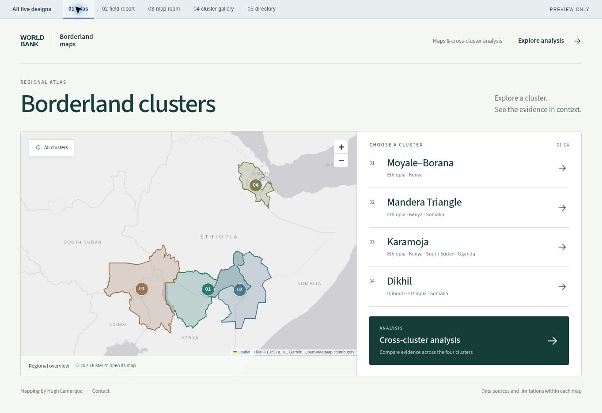
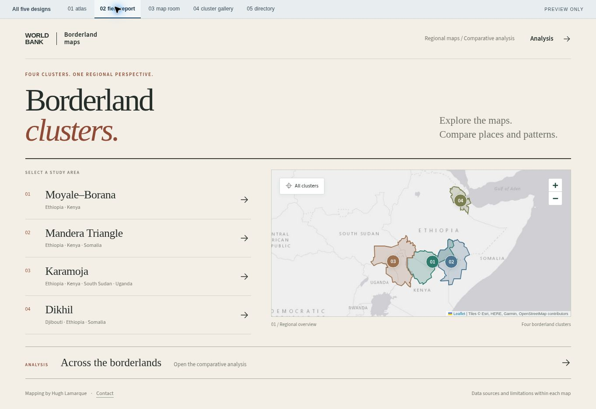
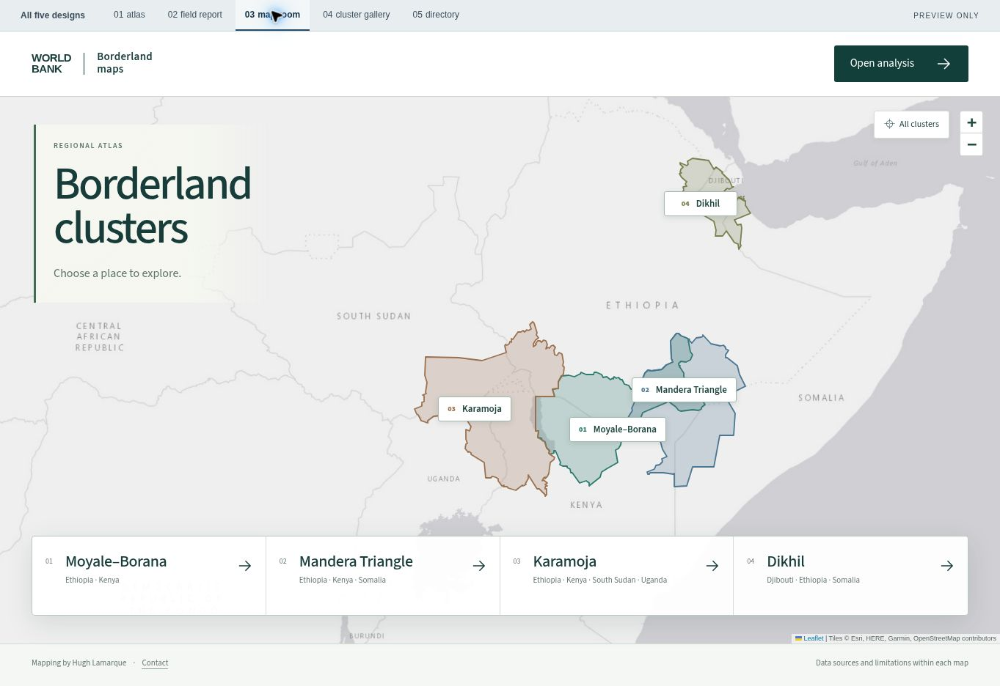
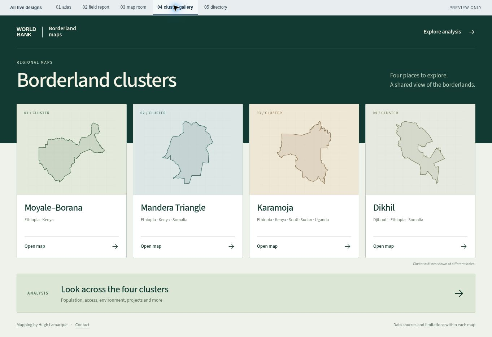
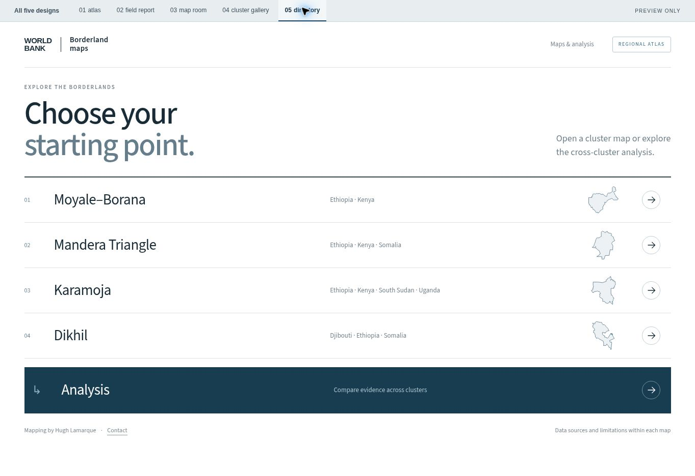

Borderland maps / Design previews
Five directions for the front page.
The same four clusters and analysis, with five different approaches to layout and character. Open any design to try it.
Current live front page
01
The atlas
A large regional map with one clear navigation panel.

02
The field report
Warm paper, strong typography and an editorial composition.

03
The map room
A full-width map with the four clusters in a single dock.

04
The cluster gallery
Four generous study-area panels with equal prominence.

05
The directory
A precise, spacious index with a direct route to every map.